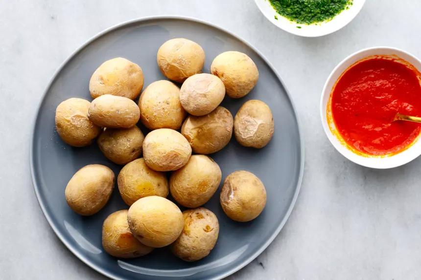

Estas en: Inicio >> Gastronomía
Sabores de Las Palmas
La gastronomía de Las Palmas destaca por su sencillez y la calidad de
sus productos volcánicos y marinos.
Resumen de Gastronomía
Platos típicos de Las Palmas
| Categoría |
Ejemplo |
| Plato Principal |
Sancocho Canario |
| Acompañante |
Papas Arrugadas |
| Salsa |
Mojo Picón |
| Postre |
Bienmesabe |
Preparación de las Papas Arrugadas

- Lavar bien las papas pequeñas sin quitar la piel.
- Cocer en agua con abundante sal gorda y una rodaja de limón.
-
Escurrir y dejar al fuego moviendo el caldero para secarlas y
arrugarlas.
Variedades de Mojos y Salsas
- Mojo Rojo (Picón): A base de pimienta palmera.
-
Mojo Verde:
- Variedad de Cilantro.
- Variedad de Perejil.
- Alioli canario.